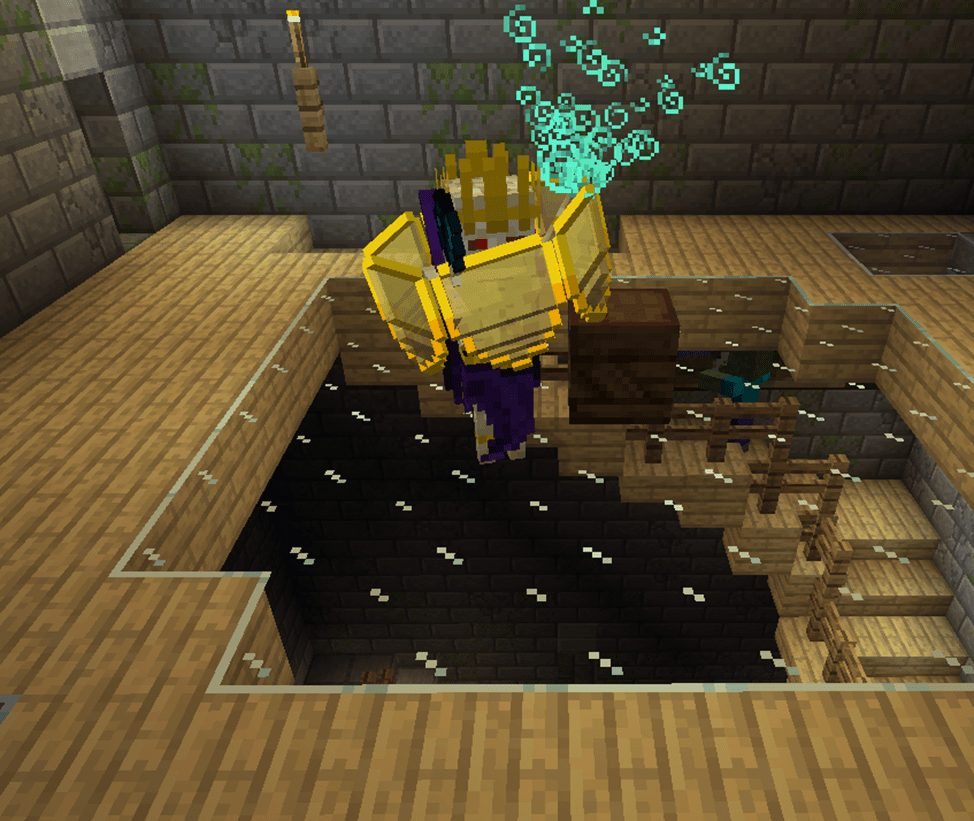

STAGE 2：トワイライトリッチ Twilight Lich
頭脳派魔法使い。ただし最終形態は金の剣で殴ってくる。

場所 リッチタワー最上階HP 100危険度 ★★☆☆☆解放 沼地・闇の森・雪原
見つけ方
地図のリッチアイコンの場所にある塔。ナーガの鱗を手に入れていないと塔そのものに入れない。塔に正式な入口はないので、壁を壊して侵入し、螺旋階段を最上階まで登る。道中のチェストにはムーンワームクイーン等の珍品が入っていることがある。
倒し方 3形態ある
- 第1形態：周りに盾を張って分身と魔法弾。本体への攻撃は通らない。火球を剣でタイミング良く打ち返すと盾が1枚ずつ割れる
- 第2形態：盾が割れるとゾンビを召喚しはじめる。取り巻きを捌きつつ本体を狙う
- 第3形態：金の剣を持って殴ってくる。ここまで来れば普通の剣戟で決着
打ち返しの練習（剣を振るタイミング）、盾、松明（塔内は暗い）、ツルハシ（壁を壊して入るため）
🎁 戦利品：杖（黄昏の杖＝魔法弾連射／ゾンビの杖＝味方ゾンビ召喚／生命吸収の杖、のどれか1本）。撃破で3ルートが解放される
入口がない塔、防犯意識が謎。壁を壊すのが正規ルートと割り切ろう。